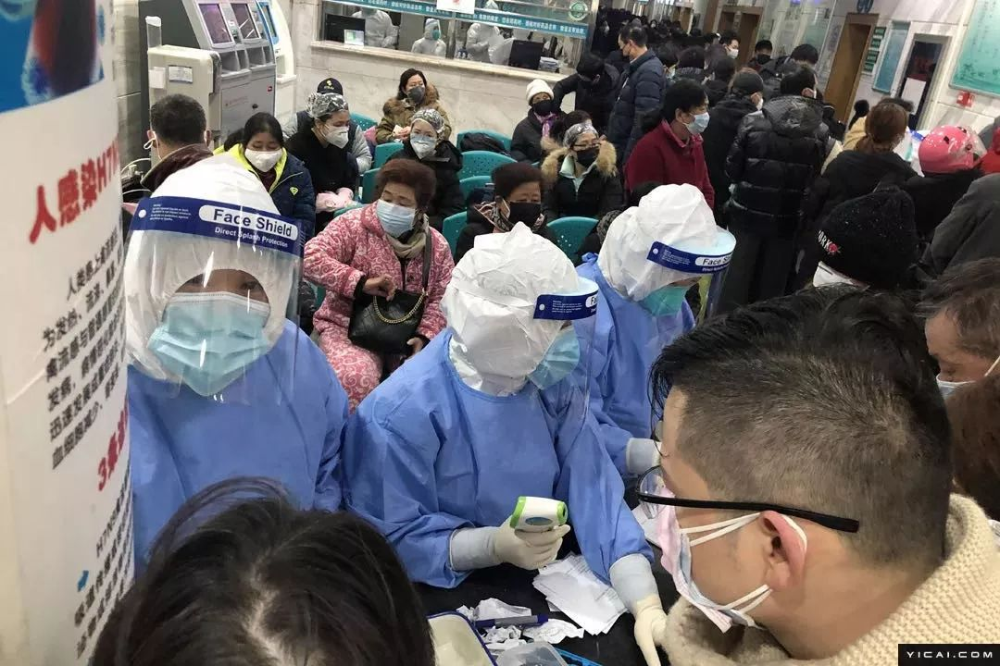
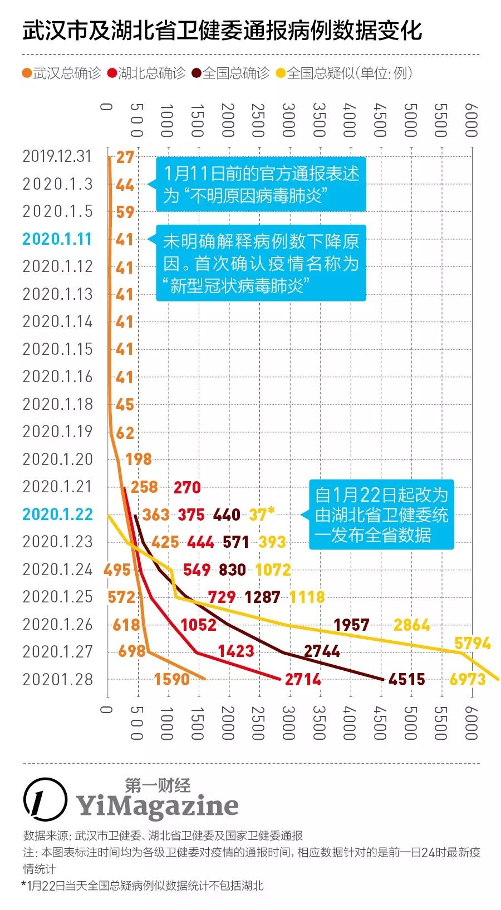
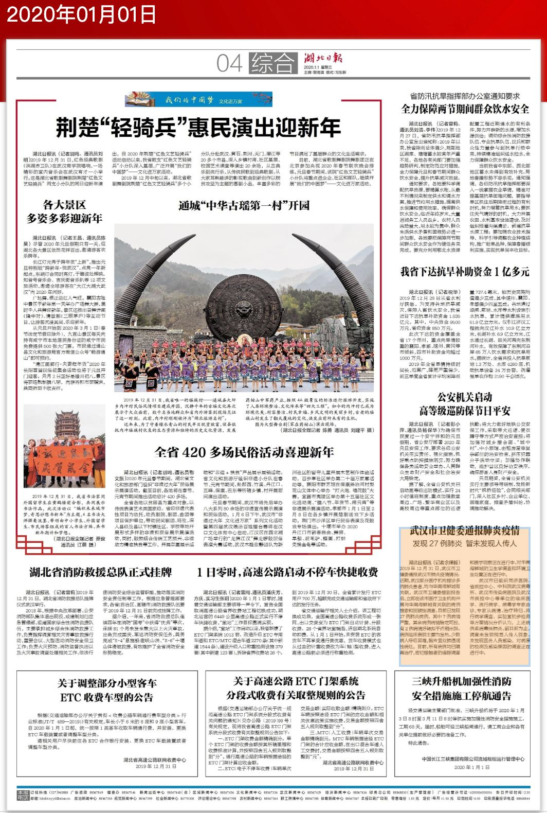
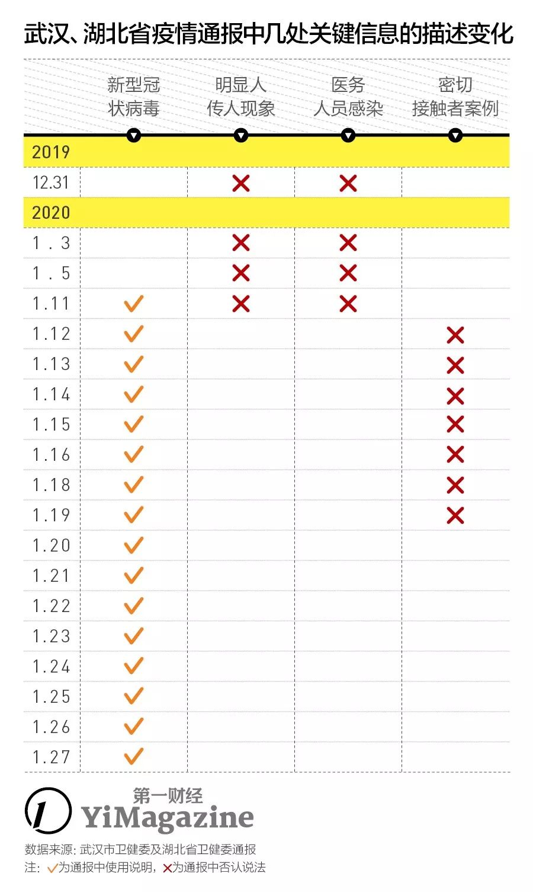
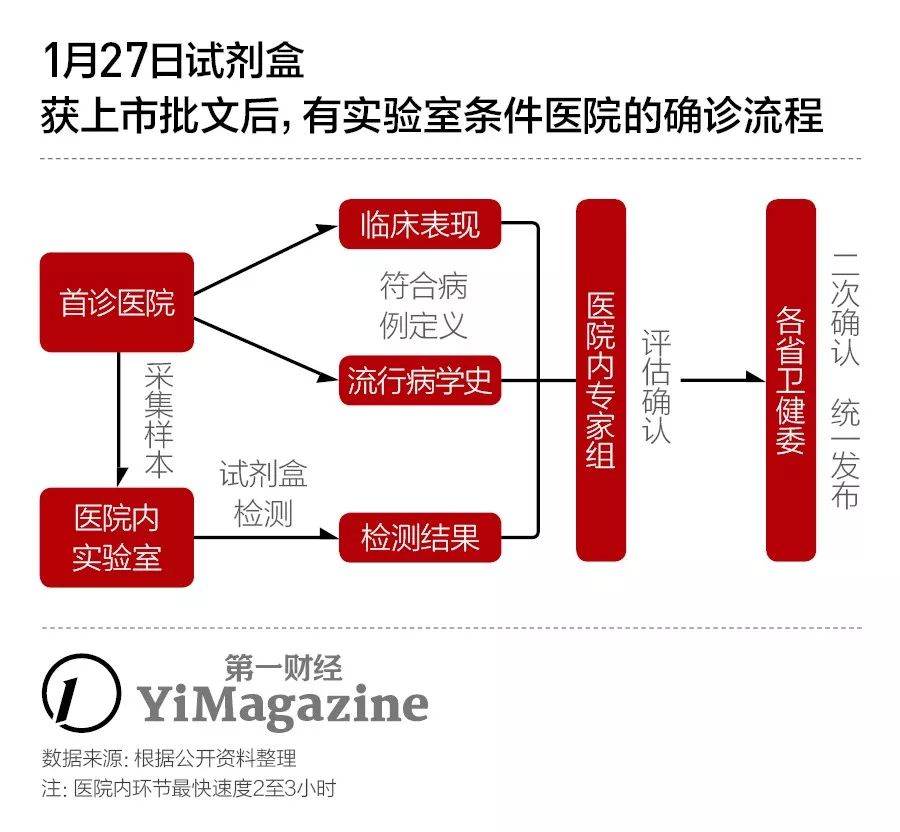

武汉疑似患者受关注 确诊难待解决
原文链接 备份链接 【财新网】（记者 黄姝伦 赵今朝）新型冠状病毒感染肺炎疫情还在爆发式增长，武汉1月23日上午10点宣布交通封城。官方披露，截至1月23日24时，全国确诊病例达850例， 26例死亡绝大部分集中在武汉市，其中河北省出现首 …

审慎的通报流程、破格启用的检测手段，以及实验室级别的硬性规定，如何影响了整个过程的时效性？
记者 | 许冰清
编辑 | 陈 锐、王姗姗
制图 | 程 星
2020年1月28日，国家卫健委对外发布通报称，截至1月27日24时收到全国30个省（区、市）累计报告确诊新型冠状病毒感染的肺炎病例达到4515例，累计死亡病例106例，疑似病例则增至6973例。

摄影：第一财经 吴绵强
目前，全国已有30个省启动重大突发公共卫生事件一级响应。为进一步防控疫情，国务院办公厅已决定全国春节假期延长至2月2日（农历正月初九），部分省市、企业自主要求的上班时间甚至更晚。
新型冠状病毒肺炎会在短时间内演变为一场全国性传染疫情，与其发端之地武汉早前对于相关病例的确诊、通报流程不通畅和重视程度不足有关。
回顾武汉市卫健委1月份发布的疫情通报，1月5日通报59例确诊“不明原因肺炎”病例之后至1月11日晚24时之间，“新型冠状病毒”的确认过程让武汉减少了18名此前已诊断为“不明原因的病毒性肺炎”的患者，紧接着，在湖北省召开两会的1月11日至17日期间，武汉出现了“无新增确诊病例”的“空窗期”。

拥有1100万人口的武汉，就这样错失了阻止恶性疫病进一步大范围扩散的关键的12天：1月6日至1月17日。
1月27日，武汉市长周先旺在接受央视专访时表示：“这次疫情其实各方面对我们信息的披露是不满意的，我们既有披露的不及时的一面，也有利用有效信息来完善工作不到位的地方。对于披露不及时，希望大家理解，它是传染病，传染病有传染病防治法，要依法披露，作为地方政府，我获得信息之后，授权之后才能披露，这一点在当时不被理解。”
“只要有利于疫情控制，我们愿意革职以谢天下。” | 视频来源：央视
但是整个武汉无新增病例的“平静”时间长达12天，这段时间里，医疗体系和疾控部门以及湖北省、武汉市政府的内部到底发生了什么，公众至今并不清楚知晓。而上述官方回应也不算明确和详细。
1月11日宣布确定新型冠状病毒和1月16日的试剂盒到位固然是两个关键时间节点，但这依然无法解释为何1月5日之后直到18日武汉官方口中才再次出现新增确诊病例。
毕竟，在2019年12月31日至2020年1月5日这个时间段里，尽管为前期送检流程，确诊的“不明原因肺炎”病例依然从27例增至59例。此后，各大医院至少在收治病人之时涉及的检验监测环节也一定还在持续。而第一财经记者了解到，当时虽然没有诊断试剂，但是实验室核酸检测可以确诊病例。据病毒学专家介绍，一般需48小时。
湖北和武汉的政府公开信息显示，1月6日至10日、1月11日至17日分别召开了武汉市和湖北省的两会，这个时间段与新增病例空窗期内1月6日至1月10日疫情通报中断，以及1月11日至1月17日0个新增冠状病毒肺炎病例的时间起止点完全吻合。
2004年，全国人大经讨论、修订并通过了《传染病防治法》，同年原卫生部借鉴SARS经验，制定《全国不明原因肺炎病例监测实施方案》，后于2015年升级为《全国不明原因肺炎病例监测、排查和管理方案》。
这些有法可依、有规可循的监管流程，理论上是想通过医疗机构和各级政府疾控部门的充分协作，保证如新型冠状病毒肺炎这样的传染病能够更早被发现、更快被控制。但是为什么在武汉及湖北省的实践过程中，它们反而成为了阻碍信息及时公开的屏障？
12月31日至1月10日
不会人传人的“病毒性肺炎”
2020年1月1日，全年第一份、共计4版的《湖北日报》出街，《武汉市卫健委通报肺炎疫情》的报道简讯出现在最后一版的右下角。在此前一天，这份报纸为全省2019年的发展成果做了12个整版的特别报道。

《湖北日报》2020年1月1日第四版（电子版）截图
《湖北日报》当时对肺炎疫情的这则报道，与12月31日武汉市卫健委发布的相关通报内容完全一致，且更为简略。由于当时医疗研究机构仍在检测病原、调查感染原因，直至1月11日，武汉市卫健委对外的信息通报中都以“不明原因的病毒性肺炎”称呼这起新型病毒疫情。
这一阶段的疫情通报并非每天都有，缺失的天数（7天）甚至比通报的天数（4天）更多，而1月6日至1月9日数据则完全缺失。
武汉卫健委这一阶段发布的通报中，一直在强调以下几点：所有患者均在武汉市医疗机构接受隔离治疗；未发现明确的人传人证据；未发现医务人员感染。其中早期通报中，还相对强调了病例与华南海鲜市场的接触史。
1月27日，中国疾控中心病毒病所对外披露，从武汉华南海鲜市场的585份环境样本中检测到33份样品含有新型冠状病毒核酸，确认了病毒来源于华南海鲜市场销售的野生动物。这些样本是12月31日和1月12日分两次在市场内采集的，其中12月31日采集515份。
但是，医学期刊《柳叶刀》于1月24日发布的一则论文显示，在武汉市卫健委1月11日公布的41名患者中，12月1日发病的首例患者并无华南海鲜市场暴露史。同期刊物发布的另一则论文显示，2019年12月29日至2020年1月4日期间在武汉的6位深圳旅客，在全无华南海鲜市场暴露史、无野生动物接触史的情况下，因在武汉市当地医院看望亲属感染了新型冠状病毒。
依据《全国不明原因肺炎病例监测、排查和管理方案》，当武汉市医疗机构的医务人员发现符合不明原因肺炎定义的病例后，应立即报告机构相关部门，在12小时内组织本单位专家组进行会诊和排查，并进行网络直报，同时向市级疾控机构报告。疾控机构接到聚集性不明原因肺炎病例报告后，应立即进行流行病学调查，同时组织对病例的密切接触者进行登记、追踪和医学观察，并报省级卫生行政部门备案、审核。
但由于当时病原鉴定和病因溯源工作仍在进行，无法确定病原病因，即无法将其列入“法定传染病”行列，也就无法组织更大规模的疫情排查及通报过程。即使是医院内部的隔离措施也做得并不到位。
一位在医院被感染的医生在接受北青深一度采访时证实，他所在的科室大约于1月7、8日开始收治“不明肺炎病人”，第一位病例出现发热症状后马上做了肺部CT和呼吸病毒、支原体、衣原体检测。其中肺部CT检测出来的是肺部磨玻璃病变，符合新型冠状病毒感染肺炎的表现，医生曾经提出应该做核酸检测确诊，但是”专家组的人说他们无法决定做不做检测“。随后这位医生也于1月10日在工作中被感染，并且直到1月24日才做上核酸检测，至北青报1月26日发稿时仍未算真正确诊。

1月11日至1月16日
“难确诊”导致新增病例“空窗期”
1月11日，《湖北日报》为当时已经召开的全省两会拿出了3个整版，但对当时武汉的疫情通报并未跟进。也正是在这一天，武汉市卫健委的通报中首次确认了疫情名称，同时下调了确诊病例人数。
1月11日，武汉市卫建委通报称，病原核酸检测已完成，“国家、省市专家组对收入医院观察、治疗的患者临床表现、流行病学史、实验室检测结果等进行综合研判”后，初步诊断此前的59例“不明原因的病毒性肺炎”患者中，有41例属于“新型冠状病毒感染的肺炎病例”。
而在1月11日至1月17日湖北省两会期间，武汉市卫健委的疫情通报虽然恢复了日报制，但每日的核心内容基本一致：无新增新型冠状病毒感染的肺炎确诊病例；密切接触者中没有发现相关病例。
事后，面对社会“11日至16日期间为何没有新增确诊病例”的诘问，武汉市卫健委曾回应称，主要原因是1月16日之前，整个湖北省都没有可供快速检测新型冠状病毒的“试剂盒”，病毒检测要经历辖区、市、省、全国四级疾控中心，结果从送出到返回约需3-5天。
为解决检测环节的困难，1月下旬，有能力的医药机构已多开始针对新型冠状病毒的试剂盒研发，但疾控行业人士曾表示，确诊并不是只有试剂盒这一种手段。宾西法尼亚大学病理检验系副教授王萍曾撰文表示，检测病毒可以通过试剂盒，也可用基因测序法，只不过测序法对仪器要求高，速度也慢一些，不适合大批量筛查。
理论上，首诊医院可以了解疑似病人的流行病学史，并掌握包括临床表现、血细胞实验室检查、胸部影像学结果在内的一系列表征指标，确认其符合《新型冠状病毒感染的肺炎诊断方案（试行）》中的病例定义。但实际确诊环节却要严格依靠各级疾控中心对采集的病毒样本做检测、复检、确认。从流行病学调查处理到会诊、排查再到病例管理——流程之复杂，是新型冠状病毒肺炎早期在武汉、在湖北、乃至全国多地“难确诊”的关键原因之一。

不过，在没有新增确诊病例的日子里，武汉市卫健委还于1月13日至14日间，接待了一个港澳台地区专家组的实地考察。
据国家卫健委国际合作司港澳台办公室的相关消息，在武汉期间，港澳台专家组“对疫情防控与应对处置、医疗诊治、病原检测等进行了全面考察，与参与此次疫情防控和患者诊治的国家、省、市级专家进行面对面交流，咨询了解了防治相关信息，并实地参观疾控机构的实验室和收治病例的医疗机构”，还提出了相关的工作建议，但具体的建议内容并未披露。
1月17日至1月22日
以“科研试剂”名义引入的试剂盒
1月17日，武汉确诊的新型冠状病毒感染的肺炎病例数在通报中开始蹿升，在1天内增加了17例。而到了1月20日，武汉市内的确诊病例在当天翻了近两番、达到了198人。
1月18日，组长钟南山教授带领的国家卫健委高级别专家组再次到达武汉。此后，随着钟南山对媒体表示新冠病毒有人传人现象、有医务人员感染后，1月21日起，国家卫健委开始通报全国新冠肺炎数据，湖北卫健委从1月22日起通报包括武汉在内的全省数据，武汉卫健委不再单独通报相关数据。
此前，国家卫健委已经决定将新型冠状病毒感染的肺炎纳入与SARS、H7N9禽流感等同类的“乙类法定传染病“管理，并采取甲类传染病（鼠疫、霍乱）级别的预防、控制措施。1月22日，《新型冠状病毒感染的肺炎防控方案（第二版）》等一系列专项方案，也由国家卫健委印发。这意味着，医院和疾控部门终于可以按照规定，进行快速上报、处置和调查的合作。
首批针对新型冠状病毒生产的PCR试剂盒，最早是在1月16日被下发到各省级疾控中心。在一个试剂盒内，实验者可以对50个乃至更多的疑似样本做平行检测，且在2至3小时内即可看到结果，“快速确诊”终于成为可能。
在中国疾控中心首批认定可生产试剂盒的企业名单中，只有3家机构入选。3家机构在接受媒体采访时都表示，已经是开足马力。以入选的上海捷诺生物科技有限公司情况为例，公司在1月16日就已生产了可供7.5万人份使用的试剂盒，并对外交付。
但当试剂盒被运往各地，它们最先到达的地点依然是各省市的疾控中心，而不是一线的医院。
这么做又是因为“合规性”——直到1月27日，各家公司生产的新型冠状病毒检测试剂盒都未拿到国家药监局的上市批件，只能以科研名义提供给疾控系统使用。
按照正常流程，一个核酸检测试剂盒从研发到获得国家药监局的注册证，一般需要3-5年时间。不过，此次因疫情紧急，国家药监局决定对疫情防控所需药械全部实行应急审批，已属于“特事特办”。
之江生物也是此次试剂盒拿到注册证的企业之一，公司副总经理倪卫琴在接受《经济观察报》的采访时表示，包括设计开发、验证、交叉反应、临床数据审查在内的审批标准“跟原来的要求一样，一点都没有降低”，只是审批流程上有了优化，此前一般按顺序依次进行的多个注册流程可以同步进行，压缩了注册时间。
1月23日至今
全市10家机构，每天可检测样本近2000份
1月22日，国家卫健委更新发布了《新型冠状病毒感染的肺炎诊疗方案（试行第三版）》，针对“病例的发现与报告”环节，删去了医疗机构需将标本送至疾控中心进行病原检测的相关内容。
考虑到大量疑似病例的确诊压力，武汉市也遵循这一制度变化，开始指定各定点救治医院、发热定点诊疗医院的对口帮扶医院、以及武汉市疾控中心内“具备相应防护级别的生物安全实验室”开展样本的病原核酸检测工作。

不过， 武汉市内首批获此许可的机构目前仅有10家，预计全部运行起来每天可检测样本近2000份。
对于检测实验室的生物安全级别提出要求，主要是因为检测新型冠状病毒所用的血液或其他体液可能具有高传染性，检测和离心过程中产生的气溶胶可能感染检测人员。比如，SARS病毒的检测就要求实验室达到三级生物安全水平，埃博拉病毒则要求四级生物安全水平。
而在实验室的生物安全评级过程中，也必须考虑通风、气压、样本流向（指样本从病房通过什么途径到检验实验室，从哪个门进入，到达实验台后从哪个仪器到哪个仪器，废弃样本怎么处理，从哪个门出实验室等系列流程）等方面，检测人员也要经过特殊训练。从仪器上来说，也至少要有离心机、核酸提取仪器、实时聚合酶链式反应仪器等。
所以，不是每家医院都有条件对新型冠状病毒做检测。如果遵循SARS病毒的要求筛选实验室，全国范围内的绝大多数一级、二级医院都会被否决，只有大部分三甲医院、疾控系统及部分的检验检疫单位符合要求，而这也导致湖北省内黄冈、鄂州、孝感等城市，病患依旧面临确诊难的问题。
对于实验室级别不足的医院而言，即使拿到试剂盒，仍无法自行完成确诊，只能用于非正规地初筛病人。但相比此前众多高度疑似患者迟迟无法被确诊的状况而言，这已是很大的改观。
根据第一财经1月28日发布的快讯，世界卫生组织（WHO）在1月26日及27日的新型冠状病毒报告中，将新型冠状病毒疫情全球范围风险改为高风险。WHO表示，此前发布的报告中，错误地将新型冠状病毒疫情对全球风险总结为中等，其实为高风险。
本文版权归第一财经所有，
未经许可不得转载或翻译。

原文链接 备份链接 【财新网】（记者 黄姝伦 赵今朝）新型冠状病毒感染肺炎疫情还在爆发式增长，武汉1月23日上午10点宣布交通封城。官方披露，截至1月23日24时，全国确诊病例达850例， 26例死亡绝大部分集中在武汉市，其中河北省出现首 …
原文链接 备份链接 【财新网】（记者 刘登辉）截至1月22日，全国新型冠状病毒确诊案例已达548例。病例数量近几日迅速增加，34个省级行政单位仅有新疆、西藏、青海、甘肃、内蒙古、陕西未出现确诊和疑似案例。防控形势十分危急。值得关注的是， …
原文链接 备份链接 截至1月21日24时，13个省（区、市）累计报告新型肺炎确诊病例440例。 专家认为，1月18日以来确诊病例迅速增加，有疫情由“一代病例”转为“二代病例”的因素。 此次冠状病毒肺炎疫情传播，可明确是二代病例的，迄 …
原文链接 备份链接 *************▲************* 在这间宽敞的隔离病房，我独自一人过年。 （林和黄供图/图） 全文共*4830*字，阅读大约需要10分钟。 一位医务人员拿出两根约20厘米长的棉签，往我鼻孔里沾取 …
原文链接 备份链接 27.01.2020本文字数：3361，阅读时长大约6分钟 导读：自1月6日开始到17日，武汉新冠肺炎12天未报告一例新增病例，并在较长时间内一直强调“未发现明确的人传人的证据”，在相当程度上导致社会各界缺乏警惕、疏 …